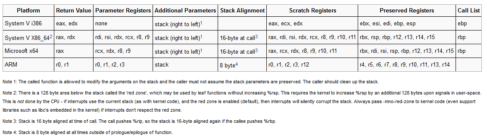
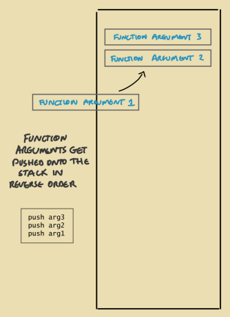

# x86 Function Calling Convention
https://en.wikipedia.org/wiki/X86_calling_conventionshttps://wiki.osdev.org/Calling_ConventionsHere is a nice cheat sheet of calling conventions from the OSDEV Wiki.
## Function Arguments
As outlined in the Stack section of the
Memory Layout node
on x86 the function arguments all get pushed onto the stack in reverse order.
This calling convention is called
cdecl## Return Value
On x86, return values are stored in
EAX (and sometimes EDX).
## Stack Alignment
https://stackoverflow.com/questions/4175281/what-does-it-mean-to-align-the-stackhttps://stackoverflow.com/questions/40307193/responsibility-of-stack-alignment-in-32-bit-x86-assemblyNone
There are some
SIMD -
Single Instruction, Multiple Data - instructions
(also known in x86-land as
SSE -
Streaming SIMD Extensions)
which can perform parallel operations on multiple words in memory.
These SIMD instructions require those multiple words to start a memory address which is a multiple of 16 bytes,
but the compiler can't assume that offsets from ESP will be a multple of 16 bytes.
Instead, the stack is deliberately aligned to 16 bytes.
By doing this, the compiler always knows that any 16 bytes added to ESP will be a memory address that is a multiple of 16 bytes.